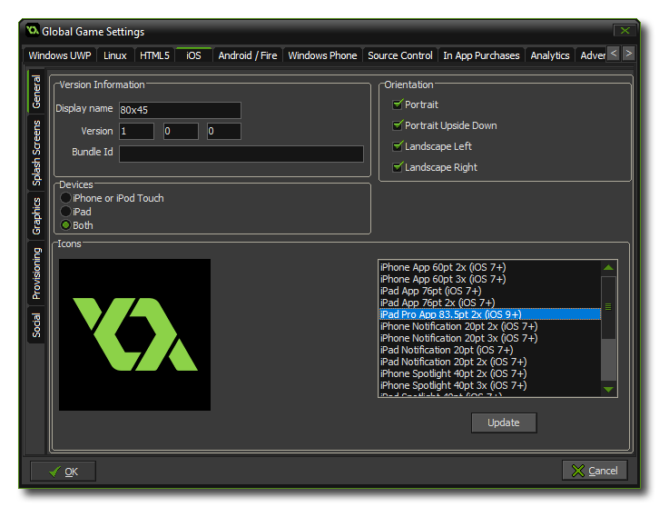
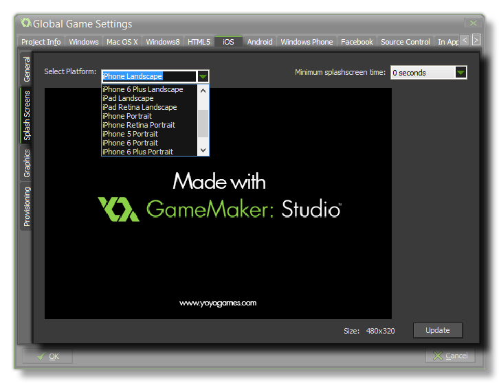
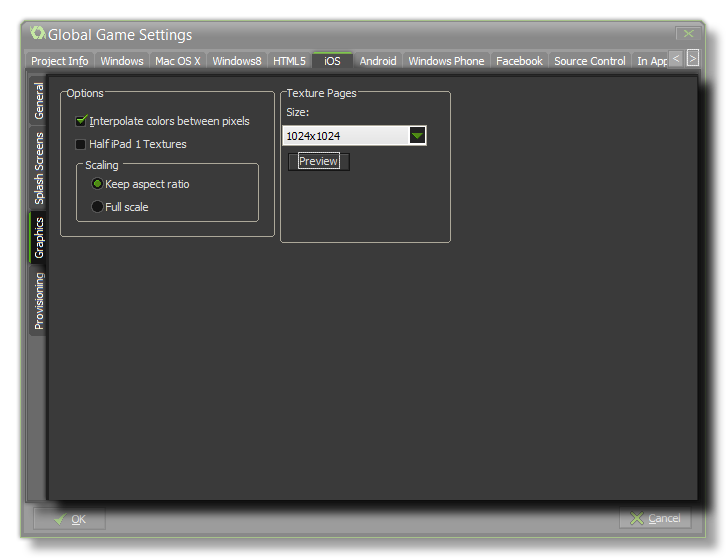
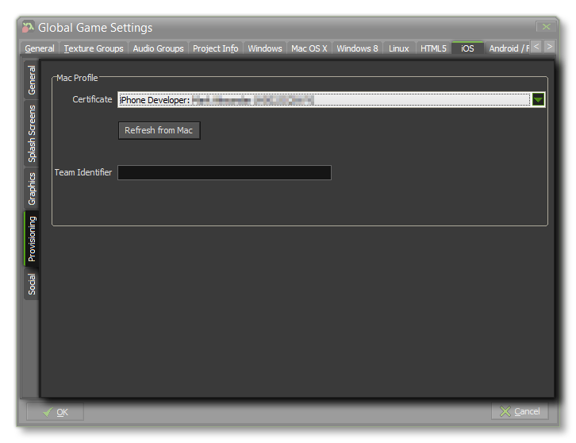
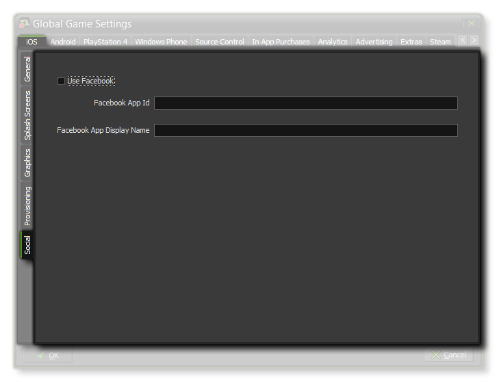

This iOS tab is split into three separate sub-tabs (accessible on the left of the window) to make changing and updating the information for your game clearer and less complicated. These tabs are explained in the following sections.
 The first thing
to do is fill in the details about your game, including its
Display Name, its App id and the Version info.
Then you will need to give your game its Icons. The icons
should be authored as a individual 32bit *.png files of
varying sizes so that they are shown correctly on the store, OS
etc...
NOTE: The Bundle id must be in the correct reverse
URL format for in app purchases to work correctly, EG:
com.[Company].[GameName]
The last two sections on this tab are Orientation and
Devices. The orientation section can be used to lock the
game to a specific orientation by checking one or all of the
following options:
- portrait
- portrait upside down
- Landscape left
- Landscape right
The Devices section is used to target specific iOS platforms,
either iPhone or iPod Touch, iPad, or
both.
 This tab permits you to add separate graphics as splash screens (the image that will be shown briefly while your app loads) for each of the different iOS target devices. These images must be authored as individual 32bit *.png images with no transparencies and at the correct size for each of the devices and orientations required. You can also set a minimum time for showing the splash screens from the drop down menu on the right (from 0 to 10 seconds).
 Once you have
configured the game details and presentation graphics, there are
two more available options on the Graphics tab. The first is the
Interpolate colours Between Pixels option that (when
checked) turns on interpolation, which basically "smooths" pixels.
For crisp pixel graphics, it should be off, but if you have nice
alpha blends and smoothed edge graphics it is better left on. Here
you can also choose to halve texture pages when targeting the iPad1
(which has a lower specification and may not run larger games
otherwise).
Next there is the option for scaling to the device screen. Here you
can choose to maintain aspect ratio (so a 4:3 room, for example,
will be "letter boxed" on a 16:9) or to scale fully (stretching the
image to fit the full screen).
WARNING! Switching off the application surface in your code will disable all the scaling options set here in the Global Game Settings until it has been switched back on again. See The Application Surface for further details.
Finally there is the option to set the size of the Texture Page. The default (and most compatible) size is 1024x1024, but you can choose from anywhere between 256x256 up to 4096x4096. There is also a button marked View which will generate the texture pages for this platform and then open a window so that you can see how they look. This can be very useful if you wish to see how the texture pages are structured and to prevent having texture pages larger (or smaller) than necessary.
NOTE: Be aware that the larger the size of the texture page, the less compatible your game will be.
 The Provisioning tab is where you configure the Mac OS options to get the correct certificates for the iOS export module. You can do one of three things here, depending on the OS tyhat your Mac is running and how you want to do things:
IMPORTANT! Provisioning can only be completed successfully if you have previously signed up for an Apple developer account and have set up GameMaker: Studio correctly to communicate with your Mac computer where this information is stored.
 The social tab is
used for setting up Facebook communication in your game. If you
require the Facebook functions, you need to click the "Use
Facebook" checkbox and then supply the Facebook App ID
and Facebook App Display Name. Note that all Facebook
functionality is accessed via an extension, and when you first
check the Use Facebook box you will be prompted to download and
install the Facebook extension from the Marketplace.